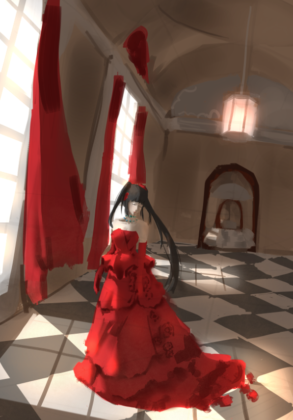
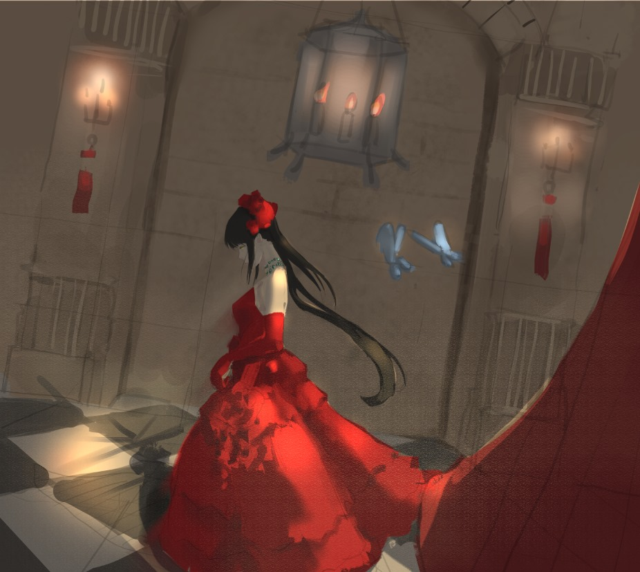
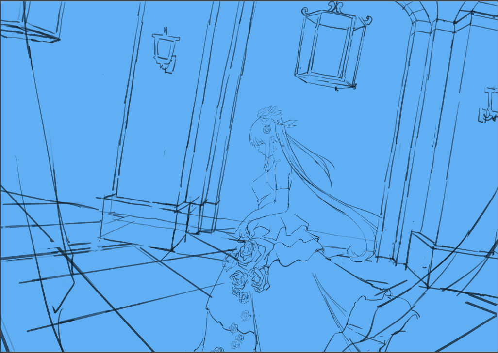
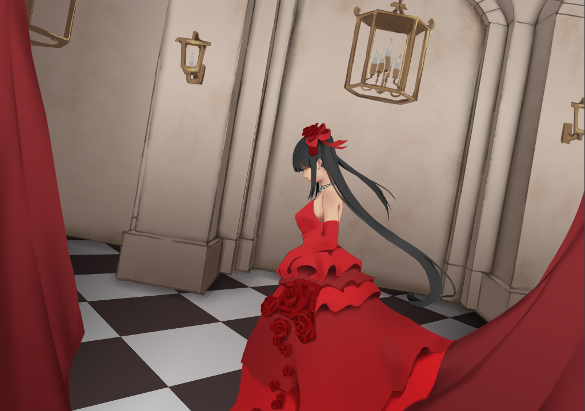
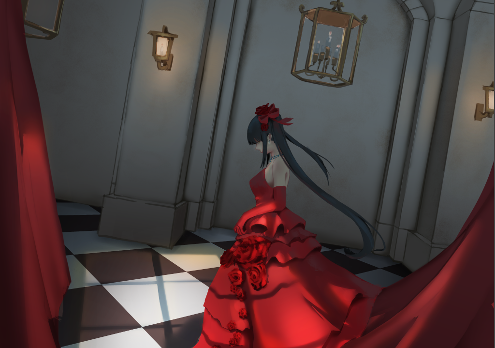
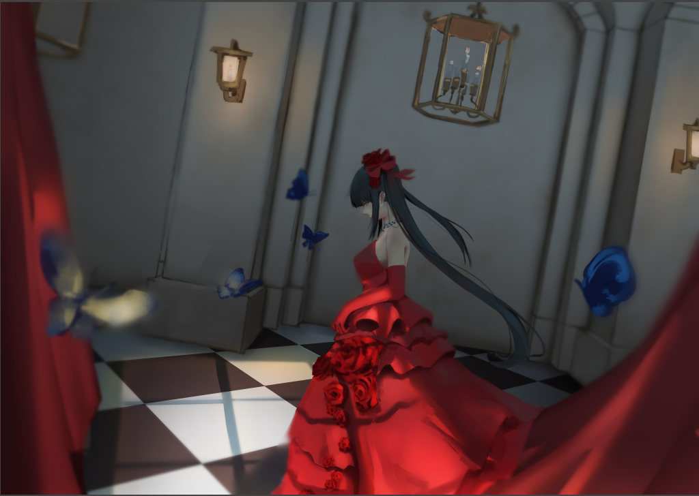

<div id="article_content" class="text-paragraph article_container"><div>期末硬擠出時間畫圖，</div><div>配合這次社團的主題畫了禮服的狂三，</div><div>為了彌補很久沒更新，來分享個流程好了。(也就那樣就是了</div><div><br></div><div>首先在<a href="https://home.gamer.com.tw/creationDetail.php?sn=4635463" target="_blank">前一篇</a>我有先畫了四個票選，</div><div>雖然沒有很多票，但是還是選了其中兩個出來畫草稿。</div><div>1號</div><div></div><div>4號</div><div></div><div>然後我私心就選後面那個啦</div><div><br></div><div>線稿</div><div></div><div>底色+閉塞</div><div></div><div>光影</div><div></div><div>後處理</div><div></div><div><br></div><div>為了趕上死線，</div><div>這張其實花的時間並沒有很長，</div><div>所以可能一些細節或是光影畫的不太好，</div><div>但最後應該還OK，以後看能不能優化這個流程。</div><div><br></div><div>以後有空再做做看這種畫圖投票吧</div><div><br></div><div>新年快樂，以上!</div><script>
$('article.c-text img').load(function () {
// 表格內圖片大於表格寬時，設為 100%
if ($(this).parents('table').length != 0) {
if ($(this).width() >= $(this).parents('td').width()) {
$(this).width('100%');
} else {
$(this).width($(this).width() + 'px');
}
}
});
</script></div>